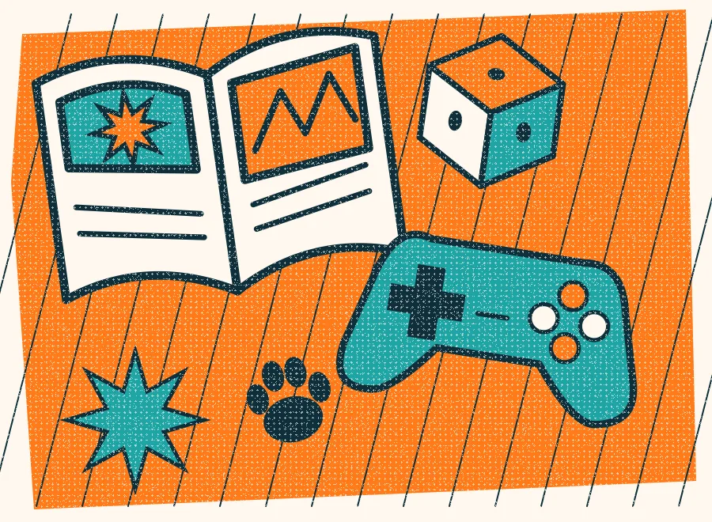
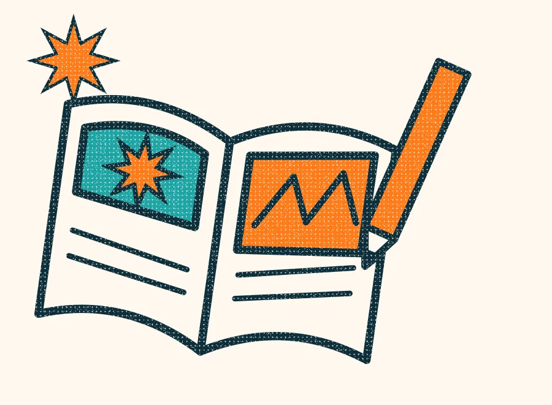

02 / SPIELPLAN
DEIN TAG.
DEINE QUEST.
Neun Stationen zwischen Papier, Spielbrett und Pfotenpause.

Der Tagesplan
Alle Programmpunkte finden am Samstag, 12. Juni 2027, statt. Du kannst jederzeit zwischen den offenen Angeboten wechseln. Für die Werkstatt gibt es begrenzte Plätze vor Ort; komm lieber etwas früher. Plane mit Hund lieber wenige feste Stationen und ausreichend Pausen ein.
| Zeit | Programmpunkt | Ort |
|---|---|---|
| Ankommen & Schnupperrunde Hol dir den Tagesplan, orientiere dich und zeige deinem Hund zuerst die ruhige Ecke. | Foyer | |
| Zine-Werkstatt Falte ein Miniheft und zeichne einen eigenen Hundesuperhelden. Material liegt bereit. | Atelier | |
| Kooperative Brettspiele Gemeinsam statt gegeneinander: kleine Runden, auch ohne Vorkenntnisse. | Spieltische | |
| Rudel-Pause Zeit für Wasser, frische Luft und einen entspannten Spaziergang. | Ruhebereich | |
| Comic-Lesung Kurze Geschichten aus unabhängigen Heften, gelesen in Zimmerlautstärke. | Leseecke | |
| Retro-Games Entdecke klassische Spiele mit Kopfhörern und kurzen Spielzeiten. | Spielbereich | |
| Zeichne deinen Hund Porträts nach Foto oder aus dem Kopf, ohne dass dein Hund stillhalten muss. | Atelier | |
| Tauschbörse Tausche eigene Zines, Karten und Spielideen mit anderen Besucher:innen. | Foyer | |
| Letzte Runde Beende dein Spiel in Ruhe und verabschiede dich vom Rudel. | Spieltische |
Zine selber machen

In unserer Werkstatt lernst du, wie aus einer einfachen Faltung acht kleine Seiten entstehen. Zeichne mit kräftigen Linien, erfinde eine Sprechblase und experimentiere mit zwei Druckfarben. Du brauchst keine Erfahrung; alle Materialien sind im Ticket enthalten.
Spielen ohne Stress
Die Spieltische sind bewusst klein. Lass deinen Hund neben dir auf seiner Decke ruhen, wenn er möchte. Bitte keine Spielwürfel oder Kleinteile auf den Boden legen. Wenn es zu voll wird, ist eine Pause jederzeit möglich.